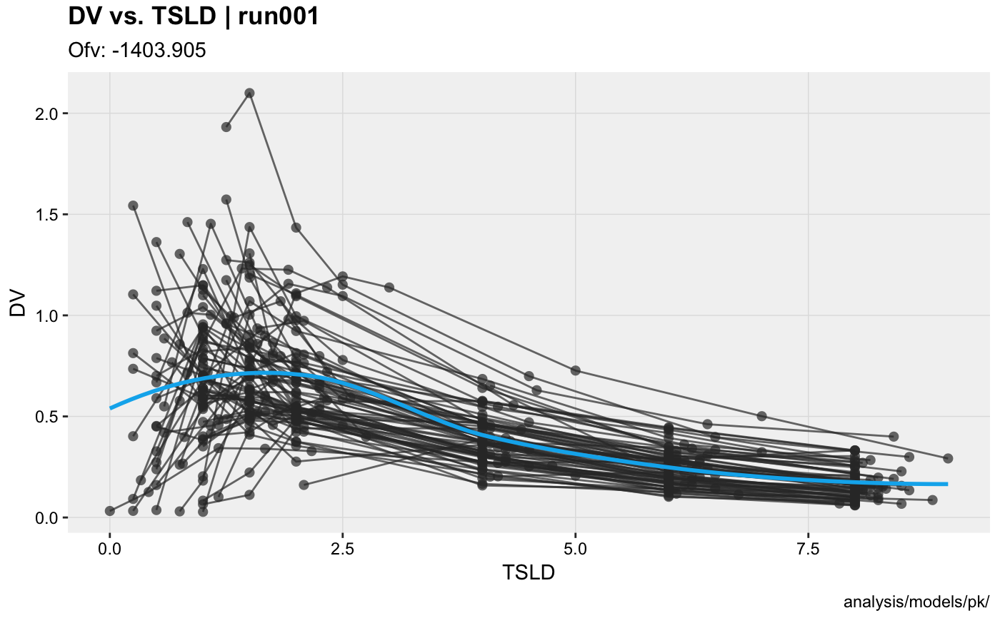

mutate() adds new variables and preserves existing ones.
select() keeps only the listed variables; rename() keeps all variables.
# S3 method for xpose_data mutate(.data, ..., .problem, .source, .where) # S3 method for xpose_data select(.data, ..., .problem, .source, .where) # S3 method for xpose_data rename(.data, ..., .problem, .source, .where)
Arguments
| .data | An xpose database object. |
|---|---|
| ... | Name-value pairs of expressions. Use These arguments are automatically quoted and evaluated in the context of the data frame. They support unquoting and splicing. See the dplyr vignette("programming") for an introduction to these concepts. |
| .problem | The problem from which the data will be modified |
| .source | The source of the data in the xpdb. Can either be 'data' or an output file extension e.g. 'phi'. |
| .where | A vector of element names to be edited in special (e.g.
|
Examples
# Mutate columns xpdb_ex_pk %>% mutate(lnDV = log(DV), sim_count = irep(ID), .problem = 1) %>% dv_vs_idv(aes(y = lnDV))#>#>#># Rename/select columns xpdb_ex_pk %>% select(ID:TAD, DV, EVID) %>% rename(TSLD = TAD) %>% dv_vs_idv(aes(x = TSLD))#>#>